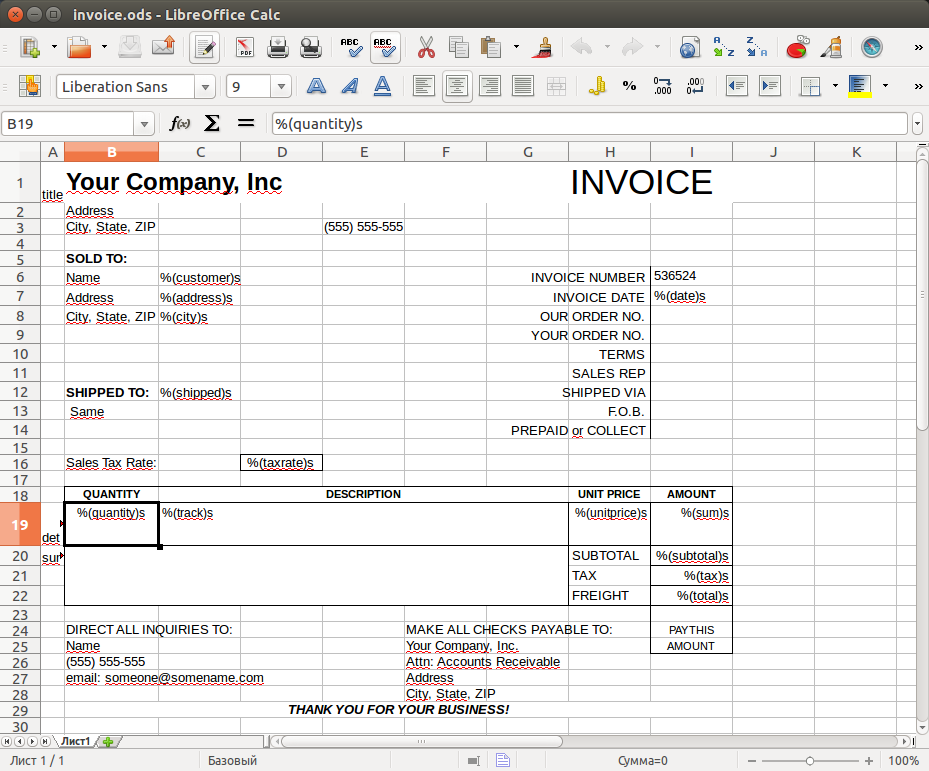

Report templates¶
To create a report, you must first prepare a report template in LibreOffice Calc.
The template files are located in the report folder of the project directory.
The following figure shows a template of the Invoice report.
Reports in Jam.py are band-oriented.
Each report template is divided into bands. To set bands use the leftmost column of a template spreadsheet.
In the Invoice report template there are three bands: title, detail and summary.
In addition, templates can have programmable cells.
For example, in the template of Invoice report the I7 cell contains the text %(date)s.
Programmable cell begins with %, then follows the name of the cell in the parenthesis which is followed by character s.